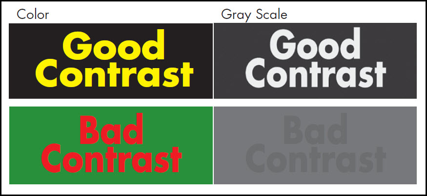
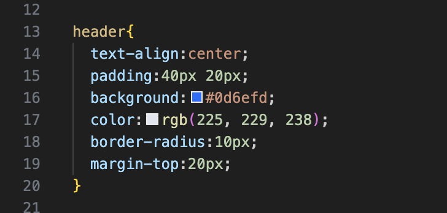
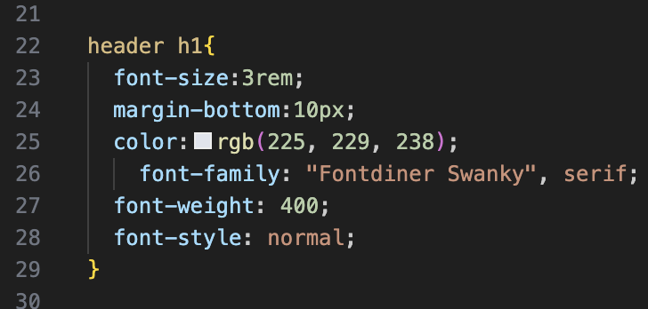
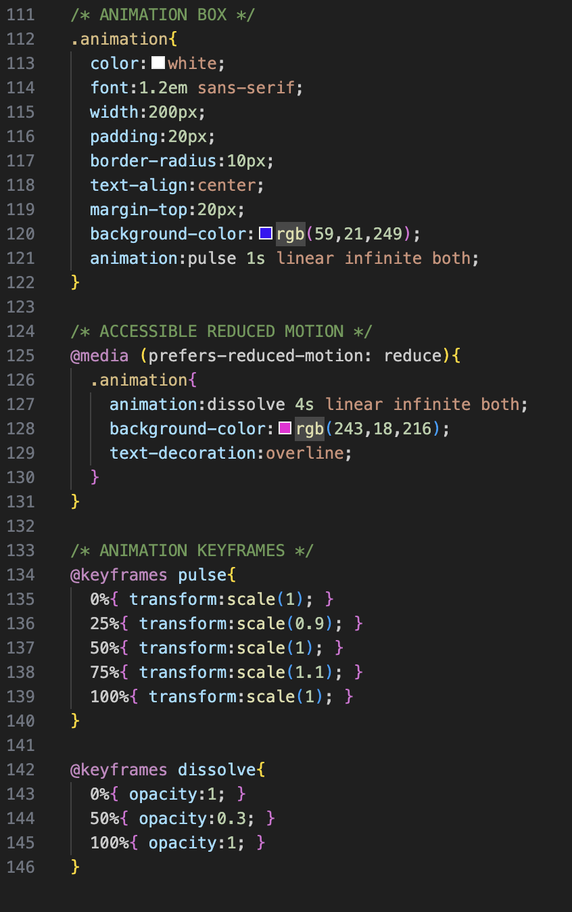
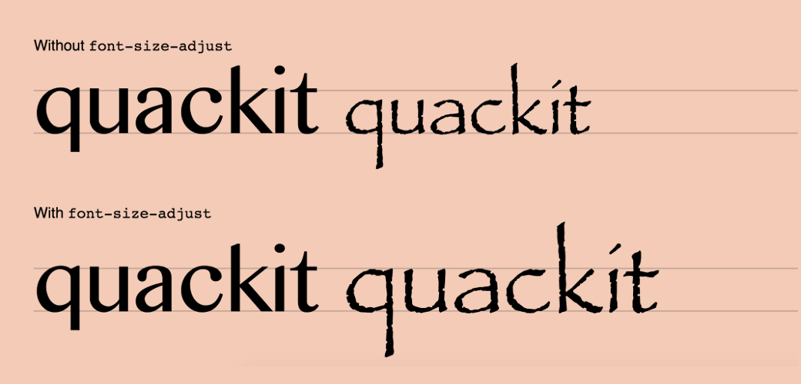

What is Accessibility?
When using CSS, taking account of every user’s experience is crucial in crafting an easy and informative website, which is where accessibility technologies are implemented. This is a revolutionary technology that has allowed many users to properly access internet resources.
From improving legibility to providing a visually cohesive color scheme, using CSS to improve accessibility ensures that all users can navigate and interact with web content effectively.
Color Contrast
Color contrast is a crucial aspect of web design that ensures text and other elements are easily distinguishable from their background. Proper color contrast enhances readability and accessibility for users with visual impairments, such as color blindness.
The Web Content Accessibility Guidelines (WCAG) recommend a minimum contrast ratio of 4.5:1 for normal text and 3:1 for large text to ensure that content is accessible to all users.
Example

Color is added to CSS using background and color. These properties control the background of containers and the color of the text.


prefers-reduced-motion
Website users with sensitivity to screen motion and vestibular disorders may experience difficulty navigating pages with an abundance of CSS animations and features.
The prefers-reduced-motion media query allows websites to reduce animations if the user has enabled motion reduction in their system settings.

font-size-adjust
The font-size-adjust property helps maintain readability when fallback fonts are used. If the primary font isn't available, this property adjusts the size of lowercase letters to maintain readability. It ensures that the text remains legible and visually consistent, even when the specified font cannot be loaded. In addition, it focuses on the lowercase letters, which are crucial for readability, rather than the overall font size. This is particularly beneficial for users with visual impairments, as it helps maintain the legibility of text across different fonts and devices.
Example
